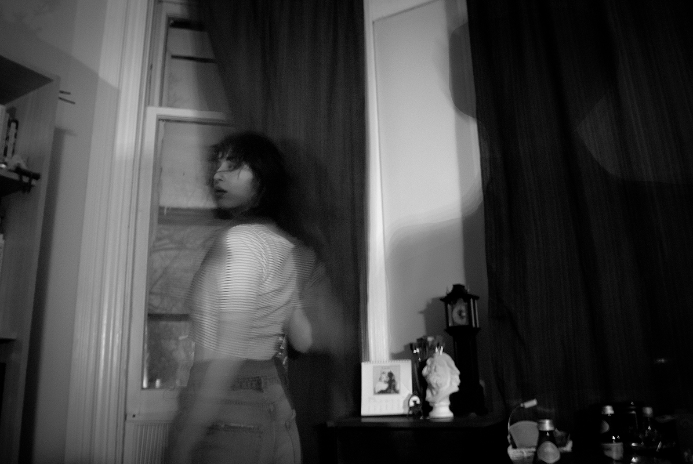
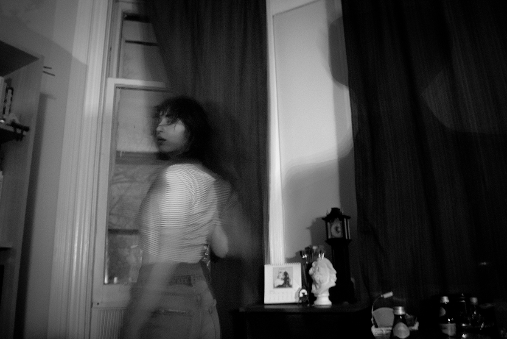
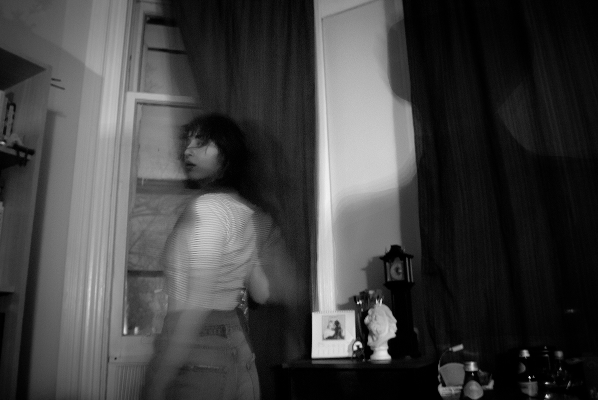

In this body of work, I investigate the photographic element in holding power over a subject, and their personal space, and placing the viewer as the intruder. The topic of voyeurism is a constant looming threat among women, the fear of being preyed on becomes analogous to a sense of thrill. The politics of looking are split between active/male and passive/female, and women in surveillance hint at a performance towards the “male gaze”. I encourage uncomfortable viewings by putting the spectator (the viewer), the watched and the man behind the camera into one photo, looking deep into forbidden places within the subject and ourselves. These photos play with the debate that the gazer is superior to the object of the gaze, and that the act of looking contains a revolving door of undulating gaze.
